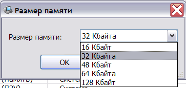
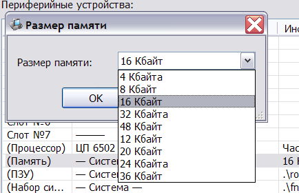

В эмуляторе поддерживаются разные типы ячеек памяти:
Настройка ячеек памяти заключается в указании объёма эмулируемой памяти (в тех случаях, когда такой выбор существует):

Аналогичным образом осуществляется конфигурирование объёма основной памяти, размещённой на материнской плате:

Поддерживаются следующие размеры памяти для различных устройств:
См. также: Изменение конфигурации, Описание и настройка устройств, Поддерживаемое оборудование, Главное меню